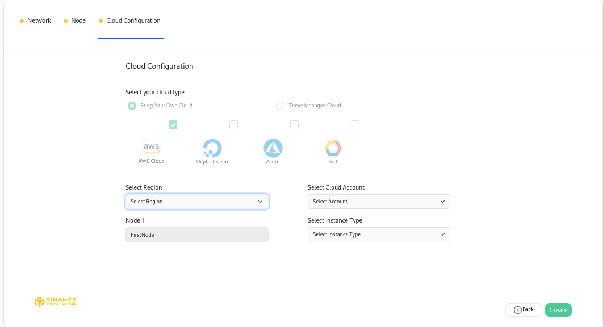
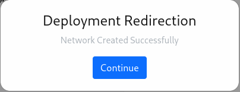

Binance Dedicated Node Setup¶
This section will guide you about the different features offered by Zeeve for Binance.
Dedicated nodes¶
Create a network¶
This section will provide you with detailed steps for creating a network of Binance.
NOTE Please make sure to follow the steps mentioned earlier before proceeding.
On the Network Configuration page you will have different cards with different network configurations for Binance, which looks similar to the image provided below.

NOTE: These cards can be different for your case. Card configurations depend on your purchased subscription.
You can Choose Managed-AWS (Zeeve’s managed hosting) for the infrastructure of your node or you can use your cloud account (AWS/DO) for the hosting of your node.
Choose the configuration you want. Click on the card and follow the steps accordingly.
Network Info: Clicking on the card you will be landed on a page similar to the below image. In this section, we have to provide network-related information for ex- Network Name, Network type, etc.

Name of Network: To uniquely identify your network, this field requires a unique name for it. Unique over here is in terms of the account in which you are creating your network. In case you have created some network earlier, and now you are trying to create with the same name, then the Zeeve platform won’t allow you to create it.
Deployment Type: Deployment type
Type Of Network
MainNet: This will deploy your network on the network mainnet. This is suggested for deploying production-grade Binance dapps.
TestNet: This will deploy your network on the network testnet. you can use this for your non-production needs like testing or demonstrations.
Workspace: This represents the workspace in which the network will be added after successful creation.
After providing all the details correctly go to the next step by clicking on the Next Step button.
Node Configuration: In this section, you have to fill in the details of the nodes you want to add to your network.

Username & Password: Choose the username and password of your choice. These will be used as RPC API credentials.
Email: Fill email of yours.
Node Name: To identify your nodes, this field will be used.
Rpc Server: RPC, which stands for “Remote Procedure Call,” is a group of protocols and interfaces that let us talk to the blockchain system. Through the RPC interface, we can ask for information about the blockchain (such as block number, blocks, node connection, etc.) and send a request for a transaction. > * HTTP: Uses individual HTTP requests and responses for each call, similar to a RESTful API. > * ws: WebSocket uses a persistent connection that allows the server to push data to the client.
JSON RPC APIs: JSON RPC API is a bridge that allows dApps to connect to nodes.
After providing the details click on Next step to go to the last step.
Cloud Configuration: This is the step for the configuration of the cloud for your nodes. This step can be different based on your selection of Network configuration cards
Managed - AWS¶
In the case of Managed - AWS, you don’t have to bother about anything, just select the region for the network by clicking on Select Region.

Region: It indicates the region of cloud service. These regions are the geographic locations where your network instances are going to be hosted. In the case of AWS, each of its regions has multiple, isolated locations known as Availability Zones. Amazon RDS provides you the ability to place resources, such as instances, and data in multiple locations. Resources aren’t replicated across AWS Regions unless you do so specifically. Ref.
BYOC - AWS¶
In the case of BYOC - AWS, select the region for the network by clicking on Select Region, select the AWS account you want to use by clicking on Select Cloud Account, also choose the instance type as your requirement by clicking on Select Instance Type.

Region: It indicates the region of cloud service. These regions are the geographic locations where your network instances are going to be hosted. In the case of AWS, each of its regions has multiple, isolated locations known as Availability Zones. Amazon RDS provides you the ability to place resources, such as instances, and data in multiple locations. Resources aren’t replicated across AWS Regions unless you do so specifically. Ref.
Cloud Account: It represents the AWS cloud account that is going to be used for network creation.
Type of Instance: It defines the combination of CPU cores and memory. Choose the configuration which could handle loads of your network. This parameter is useful for scaling up the network. The type of Instances may vary from cloud to cloud.
BYOC - DO¶
In the case of BYOC - DO, select the region for the network by clicking on Select Region, select the Digital Ocean account you want to use by clicking on Select Cloud Account, also choose the instance type as your requirement by clicking on Select Instance Type.

Region: It indicates the region of cloud service. These regions are the geographic locations where your network instances are going to be hosted. In the case of AWS, each of its regions has multiple, isolated locations known as Availability Zones. Amazon RDS provides you the ability to place resources, such as instances, and data in multiple locations. Resources aren’t replicated across AWS Regions unless you do so specifically. Ref.
Cloud Account: It represents the AWS cloud account that is going to be used for network creation.
Type of Instance: It defines the combination of CPU cores and memory. Choose the configuration which could handle loads of your network. This parameter is useful for scaling up the network. The type of Instances may vary from cloud to cloud.
Click on the Create button. A pop-up window will appear similar to the below image, which ensures the successful creation of your network.

Click on continue and you will be redirected to a page similar to the below image where you can see the nodes listed you’ve just added to the network.
Add node to a network¶
This section will guide you on how you can add a node to a network.
Select the network to which you want to add a node, and click on the network card Ref.. You will get to see similar to the below image.

Click on the Actions button on the top right, and select the Add Node option. You will get to see a web page similar to that provided below.

Fill in the details for the new node and click on the Next button. In this step, the cloud configuration and region will be prefilled according to the configuration of the network. Click on the Create button and it’s done!

Delete node in a network¶
Select the network, in which you want to perform the delete node action, and click on the network card Ref.. You will get to see similar to the below image.
Click on the delete icon present alongside the node. A pop-up window will open for the confirmation, click on the yes button to confirm.

Delete a network¶
Select the network you want to delete, and click on the network cardRef.. You will get to see similar to the below image.
Click on the Actions button on the top right, and select the Delete Network option. A confirmation window will open, click on the Yes button, attached to it.

NOTE It can take a few minutes to delete a network.